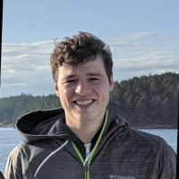

<meta name="viewport" content="width=device-width, initial-scale=1">
<link href='http://fonts.googleapis.com/css?family=Quicksand:300,400' rel='stylesheet' type='text/css'>
<link href='http://fonts.googleapis.com/css?family=Oxygen:400,300' rel='stylesheet' type='text/css'>
<link rel="stylesheet" href="style.css"/>
<link rel="stylesheet" href="https://maxcdn.bootstrapcdn.com/bootstrap/3.4.1/css/bootstrap.min.css">

<style>
	.markdown-body {
		box-sizing: border-box;
		min-width: 200px;
		max-width: 980px;
		margin: 0 auto;
		padding: 45px;
	}

	@media (max-width: 767px) {
		.markdown-body {
			padding: 15px;
		}
	}
</style>
<article class="markdown-body">
    <h1 style="text-align:center">Capsule Networks for 3D Data</h1>
    
    <br>
    
    <div class="container">
    <div class="match-author"><a href="http://tolgabirdal.github.io"><br><p>Tolga Birdal</p></a></div>
    <div class="match-author"><a href="http://campar.in.tum.de/Main/FedericoTombari"><br><p>Federico Tombari</p></a></div>
    <div class="match-author"><a href="http://campar.in.tum.de/Main/YongHengZhao/"><br><p>Yongheng Zhao</p></a></div>
    <div class="match-author"><a href="https://scholar.google.de/citations?user=enXCzCgAAAAJ&hl=en"><br><p>Jan Eric Lenssen</p></a></div>
    <div class="match-author"><a href="https://profiles.stanford.edu/leonidas-guibas"><br><p>Leonidas Guibas</p></a></div>
    </div>
    <p></p>
    
    <!--[Stanford University](http://www.stanford.edu) & [Technical University of Munich](http://www.tum.de) & Siemens AG-->
    <p></p>
    <h5 style="text-align:center"><a href="http://geometry.stanford.edu">Stanford University</a>&nbsp;&nbsp;&nbsp;&nbsp;&nbsp;&nbsp;&nbsp;&nbsp;<a href="http://www.tum.de">Technical University of Munich</a>&nbsp;&nbsp;&nbsp;&nbsp;&nbsp;&nbsp;&nbsp;&nbsp;<a href="http://www.google.com">Google</a></h5>
    <p></p><p></p><br>
    
    <div class="row">
                <div class="col-sm col-sm-offset-0 text-center">
                    <ul class="nav nav-pills nav-justified">
                        <li>
                            <a href="https://link.springer.com/content/pdf/10.1007/s11263-022-01632-6.pdf">
                            <image src="docs/IJCV22_thumb.jpg" height="160px">
                                <h4><strong>Extended IJCV'22 Paper</strong></h4>
                            </a>
                        </li>
                        <li>
                            <a href="https://github.com/yongheng1991/3D-point-capsule-networks">
                            <image src="docs/code.jpg" height="160px">
                                <h4><strong>Code [IJCV'22]</strong></h4>
                            </a>
                        </li>
                        <li>
                            <a href="https://arxiv.org/pdf/1912.12098">
                            <image src="docs/ECCV20_thumb2.jpg" height="160px">
                                <h4><strong>ECCV'20 Oral Paper</strong></h4>
                            </a>
                        </li>
                            <li>
                            <a href="https://github.com/tolgabirdal/qecnetworks">
                            <image src="docs/code.jpg" height="160px">
                                <h4><strong>Code [ECCV'20]</strong></h4>
                            </a>
                        </li>
                        <li>
                            <a href="https://arxiv.org/pdf/1812.10775">
                            <image src="docs/CVPR19_thumb2.jpg" height="160px">
                                <h4><strong>CVPR'19 Paper</strong></h4>
                            </a>
                        </li>                        
                   </ul>
                </div>
        </div>
    </div>

    <div class="text-justify">
        <div class="row">
            <!--<div class="col-lg-6 col-md-6 col-sm-12 col-xs-12">-->
                We introduce <strong>3D Capsule Networks</strong> as a generic framework that is suited to capture extrinsic or intrinsic object properties such as object orientation or part labels. Our quest is to learn robust, flexible and generalizable 3D object representations without requiring heavy annotation efforts or supervision. The use of capsule networks allows us to go beyond conventional 3D generative models by constructing a structured latent space where certain factors of shape variations, such as object parts, can be disentangled into independent sub-spaces. Such embeddings can either be explicit like quaternions representing part poses enabling equivariant network architectures or purely implicit. While the learned representations can already be used in typical tasks like classification or pose estimation, they also allow for generation. Our novel decoders then act on the latent capsules to reconstruct 3D points in a self-supervised manner. 
            
                Currently, we present two approaches, one for (un)supervised, part-based 3D shape processing across rigid / non-rigid shapes and cross-/within-category [CVPR'19, IJCV'22] and the other for classification and pose estimation. Thanks to the use of capsule networks, our methods enjoy an added structure on the latent space which enables multiple applications such as part pose estimation, part interpolation or replacement. Please refer to the papers and videos for futher information.
            <!--</div>-->
            <br>
        </div>

    <h3>ECCV'20 Oral Presentation on Equivariant Networks</h3>
    <p> 
    <div class="container">
    <p><iframe width="850" height="478" src="https://www.youtube.com/embed/LHh56snwhTA" frameborder="0" allow="accelerometer; autoplay; encrypted-media; gyroscope; picture-in-picture" allowfullscreen></iframe></p><br>
    </div>
    </p>

    <h3>CVPR'19 Tutorial on 3D Point Capsule Networks</h3>
    <p> 
    <div class="container">
    <p><iframe width="850" height="478" src="https://www.youtube.com/embed/fbhbuH9mUx0" frameborder="0" allow="accelerometer; autoplay; encrypted-media; gyroscope; picture-in-picture" allowfullscreen></iframe></p><br>
    </div>
    </p>

<h2>Citation</h2>
    <blockquote>
  @inproceedings{zhao20193d, 
  <br>author={Zhao, Yongheng and Birdal, Tolga and Deng, Haowen and Tombari, Federico}, 
  <br>booktitle={Conference on Computer Vision and Pattern Recognition (CVPR)}, 
  <br>title={3D Point Capsule Networks},
  <br>organizer={IEEE/CVF},
  <br>year={2019}
  <br>}<p> </p>
</blockquote>
<blockquote>
  @article{zhao2020quaternion,
  <br>title={Quaternion Equivariant Capsule Networks for 3D Point Clouds},
  <br>author={Zhao, Yongheng and Birdal, Tolga and Lenssen, Jan Eric and Menegatti, Emanuele and Guibas, Leonidas and Tombari, Federico},
  <br>booktitle={European Conference on Computer Vision (ECCV)},
  <br>pages={1--19},
  <br>year={2020},
  <br>organization={Springer}
  <br>}
</blockquote>
<blockquote>
  @article{zhao20223dpointcapspp,
  <br>title={3DPointCaps++: Learning 3D Representations with Capsule Networks},
  <br>author={Zhao, Yongheng and Fang, Guangchi and Guo, Yulan and Guibas, Leonidas and Tombari, Federico and Birdal, Tolga},
  <br>booktitle={International Journal of Computer Vision (IJCV)},
  <br>year={2022},
  <br>organization={Springer}
  <br>}
</blockquote>

<h2>Funding</h2>
    This joint effort is supported by Stanford-Ford Alliance, NSF grant IIS-1763268, Vannevar Bush Faculty Fellowship, Samsung GRO program, the Stanford SAIL Toyota Research, and the PRIME programme of the German Academic Exchange Service (DAAD) with funds from the German Federal Ministry of Education and Research (BMBF).

<h2>Interested in Collaborating with Us?</h2>
    We would like this project to evolve towards a repository of methods addressing shape representations for 3D computer vision. Therefore, we look for contributors and collaborators with great coding and mathematical skills as well as good knowledge in 3D vision, machine (deep) learning. If you are interested please send an e-mail to <strong>Tolga</strong>: tbirdal@imperial.ac.uk.
</article>
